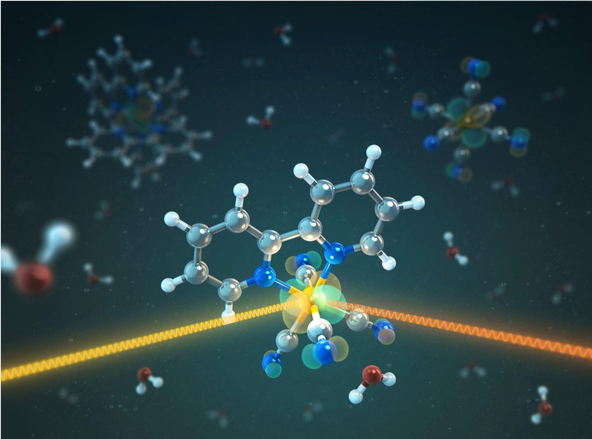
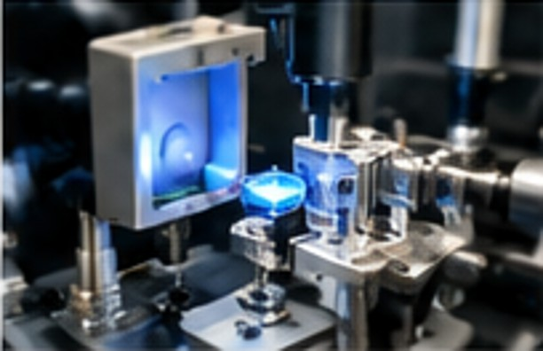

Artificial Photosynthesis
Harnessing light energy to drive useful chemical transformations through rational molecular design.
CATALYSIS FOR A BRIGHTER TOMORROW
We explore light-driven chemical transformations and molecular catalysis to create clean energy and valuable chemicals for a sustainable society.
OUR RESEARCH
Light-driven catalysis, CO2 conversion, and sustainable chemistry
Principal investigator, researchers, and students
Peer-reviewed articles and research outputs

Photochemistry, spectroscopy, electrochemistry, and analytical instruments
Latest updates, awards, and events
Access, address, and inquiries
WHAT WE DO
Our group develops transition-metal molecular catalysts and investigates their photochemical and electrochemical properties to advance artificial photosynthesis and sustainable energy conversion.
Harnessing light energy to drive useful chemical transformations through rational molecular design.
Developing selective molecular catalysts for converting CO2 into valuable fuels and chemicals.
Understanding catalytic pathways through spectroscopy, electrochemistry, and computational analysis.
PI / ASSOCIATE PROFESSOR
Institute for Chemical Reaction Design and Discovery (ICReDD)
Hokkaido University
M2 (Nagoya University)
M2 (Nagoya University)
M1 (Nagoya University)
B4 (Nagoya University)
J. Am. Chem. Soc. 2025, 147, 47859–47866.
No matter what energy input: tetradentate PNNP-ligated iridium complexes for CO2 reduction
Chem.–Eur. J. 2025, 31, e202500328.
J. Am. Chem. Soc. 2024, 146, 25963–25975.
Angew. Chem. Int. Ed. 2024, 63, e202403886.
Chem. Commun. 2022, 58, 9218–9221.
Organometallics 2022, 41, 1865−1871.
A Highly Durable, Self-Photosensitized Mononuclear Ruthenium Catalyst for CO2 Reduction
Synlett 2022, 33, 1137–1141.
Recent Advances in Light-Driven Carbon–Carbon Bond Formation via Carbon Dioxide Activation
Synthesis 2021, 53, 3263–3278.
J. Am. Chem. Soc. 2020, 142, 10261–10266.
J. Syn. Org. Chem. Jpn. 2020, 78, 856–866.
Photocatalytic hydrogen evolution using a Ru(II)-bound heteroaromatic ligand as a reactive site
Dalton Trans. 2020, 49, 17230–17242.
Spatiotemporal control of amide radicals during photocatalysis
ChemRxiv. 2020, Preprint.
J. Am. Chem. Soc. 2019, 141, 9155−9159.
Photodriven Oxidation of Water by Plastoquinone Analogs with a Nonheme Iron Catalyst
J. Am. Chem. Soc. 2019, 141, 6748−6754.
J. Am. Chem. Soc. 2018, 140, 8405–8409.
Green Chem. 2018, 20, 948–963.
Bicyclic Baird-type aromaticity
Nature Chem. 2017, 9, 1243–1248.
Multi-Electron Oxidation of Anthracene Derivatives by Nonheme Manganese(IV)-Oxo Complexes
Chem. Eur. J. 2017, 23, 7125–7131.
Effects of Lewis Acids on Photoredox Catalysis
Asian J. Org. Chem. 2017, 6, 397–409.
Angew. Chem. Int. Ed. 2017, 56, 3510–3515.
Angew. Chem. Int. Ed. 2016, 55, 7450–7454.
Photocatalytic Oxygenation of Substrates by Dioxygen with Protonated Manganese(III) Corrolazine
Inorg. Chem. 2016, 55, 3218−3228.
Homogeneous and Heterogeneous Photocatalytic Water Oxidation by Persulfate
Chem. Asian J. 2016, 11, 1138–1150.
Angew. Chem. Int. Ed. 2016, 55, 3709–3713.
J. Am. Chem. Soc. 2015, 137, 4614−4617.
Catalytic Two-Electron Reduction of Dioxygen by Ferrocene Derivatives with Manganese(V) Corroles
Inorg. Chem. 2015, 54, 4285−4291.
Activationless Electron Self-Exchange of High-Valent Oxo and Imido Complexes of Chromium Corroles
Inorg. Chem. 2015, 54, 9223−9228.
Photocatalytic Oxygenation of 10-Methyl-9,10-dihydroacridine by O2 with Manganese Porphyrins
J. Phys. Chem. A 2014, 118, 6223−6229.
Inorg. Chem. 2013, 52, 13594−13604.
Production of hydrogen peroxide as a sustainable solar fuel from water and dioxygen
Energy Environ. Sci. 2013, 6, 3756–3764.
Energy Environ. Sci. 2012, 5, 7606–7616.
GROUP UPDATES
GET IN TOUCH
For inquiries about our research or opportunities to join the group, please feel free to contact us.
Institute for Chemical Reaction Design and Discovery (ICReDD)
Hokkaido University
Room 03-102, North Campus Research Building No. 8
Kita 21-jo Nishi 10-chome, Kita-ku
Sapporo, Hokkaido 001-0021, Japan